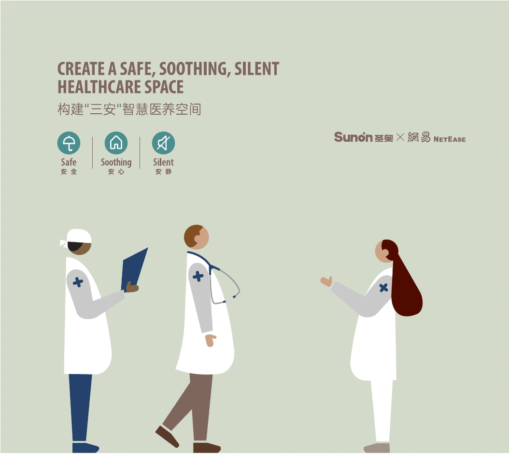

2020 / SUNON
医疗家具展会
用三个医疗场景，帮助客户理解产品系列。
查看项目 ↗SUNON / 圣奥 · 2019–2022
展会与线下品牌体验
将企业品牌与产品体系，转化为可被看见、理解和体验的视觉。精选医疗家具展会、30 周年活动与商场展陈，呈现设计从品牌表达走向现场落地的成果。
我的角色：平面设计师
展会视觉 · 活动传播 · 展陈设计 · 供应商对接与落地

THREE PROJECTS · THREE BUSINESS CONTEXTS
B2B BRAND & DIGITAL EXPERIENCE
这段经历也覆盖国内外官网、新品专题与电商品牌视觉。展会、活动与数字渠道，共同构成了我的 B2B 品牌设计实践。
查看完整工作经历 ↗